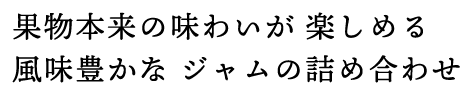
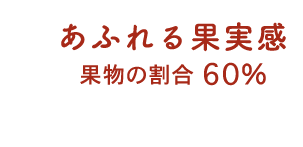
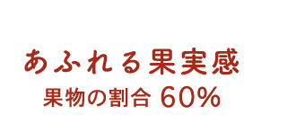
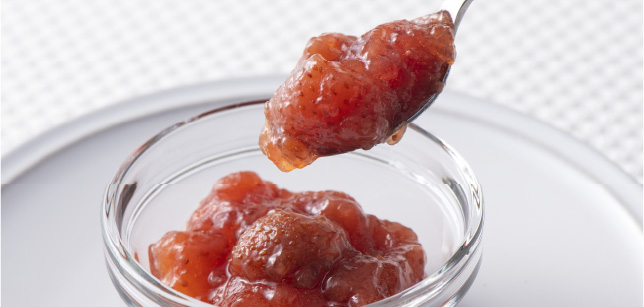
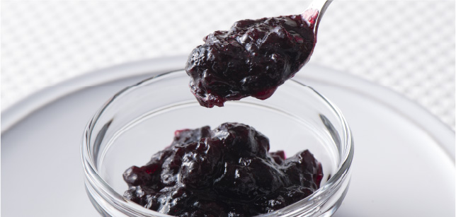
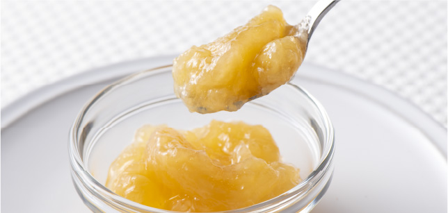

丘や山に囲まれた実り豊かな山形県高畠町から、旬の果物のおいしさをとじこめたジャムの詰め合わせをお届けします。どのジャムも山形県産の果物を使用。着色料や香料不使用で、甘みにはグラニュー糖と和三盆糖を使用し、果実本来の味が楽しめるまろやかな甘さに仕上げています。ジャムの中に含まれる果物の割合は60%。果実味溢れるジャムの食べ比べをお楽しみください。
-
山形県産いちご おとめ心
山形オリジナル品種「おとめ心」を 使用したジャムです。 甘酸っぱく しっとりした果肉の食べ心地を ご堪能ください。

-
山形県産ブルーベリー
県産ブルーベリーの中から果肉が しっかりしたものを選りすぐり、 贅沢に使用。果肉感いっぱいに 仕上げています。

-
山形県産もも
県産の白桃を使用しました。白桃 ならではの芳醇な香りと上品な 甘み、きめ細かい果肉がとろける 口福を心ゆくまでお楽しみください。
